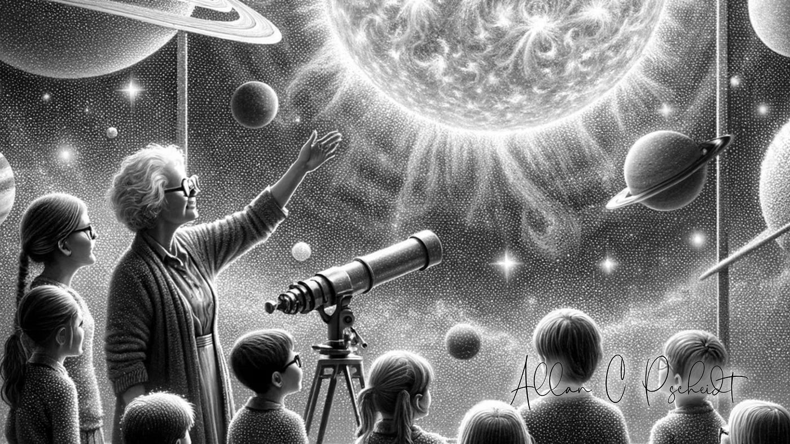

Dreamers 
Before humans ventured into space, the dream of spaceflight was nurtured by visionary minds. Konstantin Tsiolkovsky, a Russian scientist, imagined the possibilities of space travel in the late 19th and early 20th centuries, laying the theoretical groundwork with his rocket equation.
In the 1920s, American physicist Robert Goddard brought theory closer to reality with his successful experiments using liquid-fueled rockets. His work ignited the imagination and demonstrated that space travel was within reach.
During World War II, the German V-2 rocket, designed by Wernher von Braun, soared into the skies, pushing the boundaries of rocket technology. After the war, von Braun's expertise was crucial in advancing American rocketry.
The 1950s saw the Cold War superpowers, the United States and the Soviet Union, locked in a race to the stars. High-altitude tests and suborbital flights aimed to understand the mysteries of human spaceflight. The Soviet Union's launch of Sputnik 1 in 1957 signaled the dawn of the space age, inspiring dreams worldwide.
 Space Race
Space Race
The Cold War's influence on human spaceflight is a story of intense rivalry that propelled humanity into the cosmos. As geopolitical tensions soared between the United States and the Soviet Union, the race to conquer space ignited dreams of exploring worlds beyond our own.
In 1957, the Soviet Union launched Sputnik 1, the first artificial satellite, marking the dawn of the space age. This achievement signaled a new era of exploration and prompted the United States to accelerate its own space program. The rivalry reached new heights in 1961 when Yuri Gagarin became the first human to orbit the Earth, a momentous feat that captivated the world and proved that space travel was possible.
Determined to outpace the Soviets, President Kennedy set an ambitious goal for the United States: to land a man on the moon by the end of the decade. This vision spurred a period of rapid technological advancement and culminated in the Apollo 11 mission. In 1969, Neil Armstrong and Buzz Aldrin took humanity's first steps on the lunar surface, their footprints symbolizing human ingenuity and the spirit of exploration.
Throughout the Cold War, space became a stage for scientific achievement and human courage. Each mission pushed the boundaries of what was possible, from pioneering spacewalks to landing on the moon. This competition not only advanced technology but also inspired a generation to look to the stars with wonder and aspiration.
The legacy of the Cold War in spaceflight is one of turning rivalry into progress. It was a time when the pursuit of exploration and discovery transcended earthly conflicts, transforming distant stars into reachable destinations and fostering a new era of human adventure in the cosmos.
Space Stations

After the Cold War, human spaceflight entered a new chapter, one marked by cooperation and the shared dream of exploring the cosmos. The fierce rivalry that had once driven the race to the moon gave way to international collaboration, setting the stage for remarkable achievements in space exploration.
In 1998, the International Space Station (ISS) became a symbol of this new era. Nations came together, contributing their expertise and resources to build a permanent outpost in low Earth orbit. The ISS served as a laboratory, a home, and a beacon of what humanity could achieve when united by a common goal. Astronauts from diverse backgrounds lived and worked together, conducting experiments that expanded our understanding of space and its effects on the human body.
This period saw the rise of reusable spacecraft, like NASA's Space Shuttle program, which played a pivotal role in constructing the ISS and advancing scientific research. Shuttle missions not only carried astronauts and cargo to space but also repaired and upgraded satellites, including the Hubble Space Telescope. Hubble's breathtaking images of distant galaxies and nebulae captivated the public and deepened our cosmic curiosity.
During these years, robotic missions continued to explore the solar system, paving the way for future human journeys. Rovers like Spirit and Opportunity traversed the Martian surface, sending back images and data that hinted at the planet's ancient past and its potential to support life.
In the post-Cold War era, space agencies around the world, including NASA, ESA, Roscosmos, and JAXA, embraced a spirit of collaboration. They shared knowledge and technology, preparing for ambitious missions to the Moon, Mars, and beyond.
This period was a time of preparation and promise, as humanity looked to the stars with renewed hope. It was a chapter defined by unity, scientific discovery, and the unyielding belief that our future lies among the stars, waiting to be explored.
 Commercialism
Commercialism
The commercial space age has transformed human spaceflight, opening new frontiers and opportunities for private enterprises. This era began in earnest in the early 2000s, driven by visionary entrepreneurs and technological innovations.
In 2004, SpaceShipOne, funded by billionaire Paul Allen and designed by Burt Rutan, became the first privately funded spacecraft to carry a human into suborbital space, winning the Ansari X Prize. This achievement demonstrated the potential of commercial spaceflight and inspired a new generation of private space companies.
SpaceX, founded by Elon Musk in 2002, has been at the forefront of this revolution. In 2012, SpaceX's Dragon spacecraft became the first commercial vehicle to dock with the International Space Station (ISS). This milestone was followed by the successful launch of the Falcon Heavy in 2018, which further solidified SpaceX's role as a leader in the industry.
Blue Origin, founded by Jeff Bezos, also emerged as a major player. Its New Shepard rocket completed numerous successful suborbital flights, and the company is working towards more ambitious goals, including lunar missions.
Commercial spaceflight expanded beyond traditional missions with companies like Virgin Galactic, founded by Richard Branson, offering suborbital tourism experiences. In 2021, both Virgin Galactic and Blue Origin successfully launched their founders into space, marking a significant moment for space tourism.
The commercial space age is characterized by rapid advancements in technology, increased accessibility to space, and a growing partnership between private companies and government agencies like NASA. These collaborations aim to return humans to the Moon, explore Mars, and create a sustainable presence in space.
Today, the commercial space age continues to push the boundaries of human spaceflight, making space more accessible and laying the groundwork for humanity's future among the stars.
Summary
- Early Rocketry and Space Probes
- 1940s-1950s: German V-2 rockets, captured German scientists, Cold War competition.
- First Satellites and Animals in Space
- 1957: Sputnik 1, first artificial satellite.
- 1957: Laika aboard Sputnik 2, first animal in orbit.
- Human Spaceflight Begins
- 1961: Yuri Gagarin, first human in space (Vostok 1).
- 1969: Neil Armstrong and Buzz Aldrin land on the Moon (Apollo 11).
- Lunar Exploration
- 1969-1972: Apollo missions gather moon rocks and conduct experiments.
- Space Stations and Shuttle Era
- 1971: Soviet Union launches Salyut 1, first space station.
- 1981: NASA launches Space Shuttle Columbia (STS-1).
- International Collaboration and Mir
- 1986: Soviet Union launches Mir, modular space station.
- 1998: International Space Station (ISS) begins assembly.
- Commercial Spaceflight and Beyond
- 2004: SpaceShipOne completes first privately funded human spaceflight.
- 2010s: SpaceX's Dragon docks with ISS, commercial space ventures.